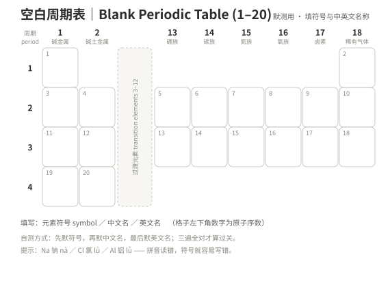
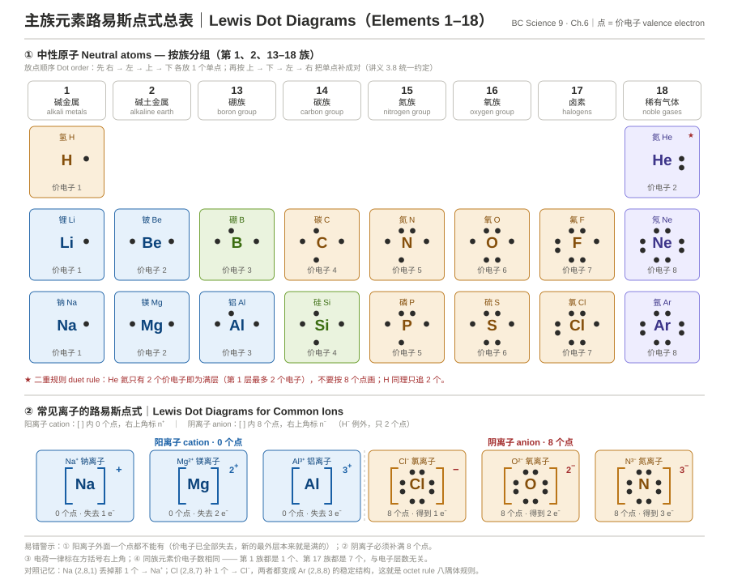
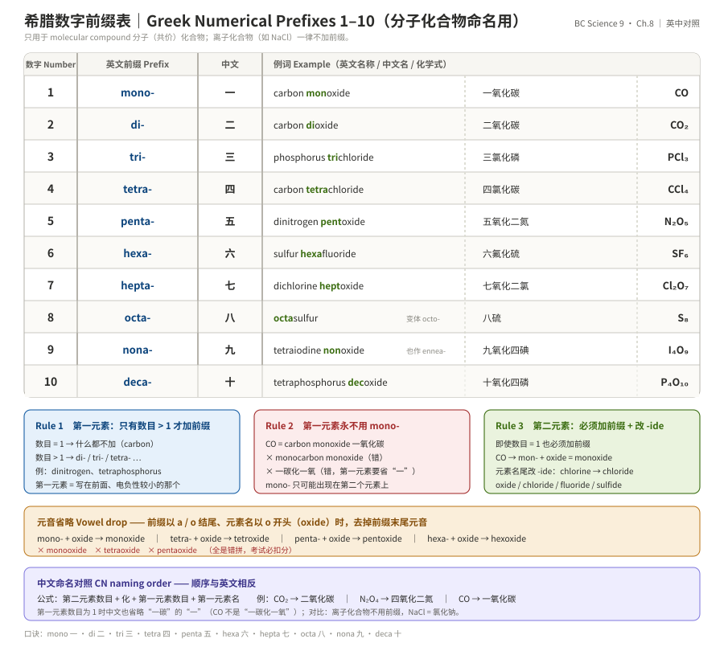
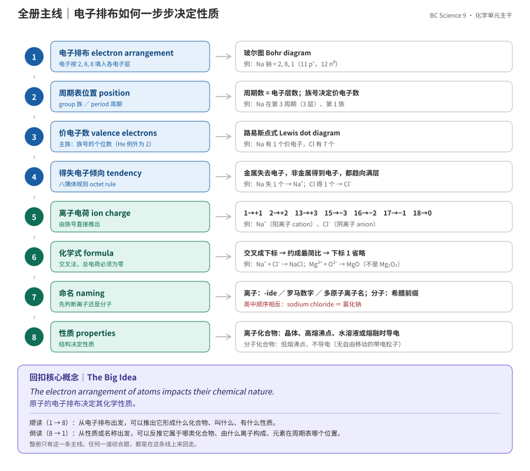
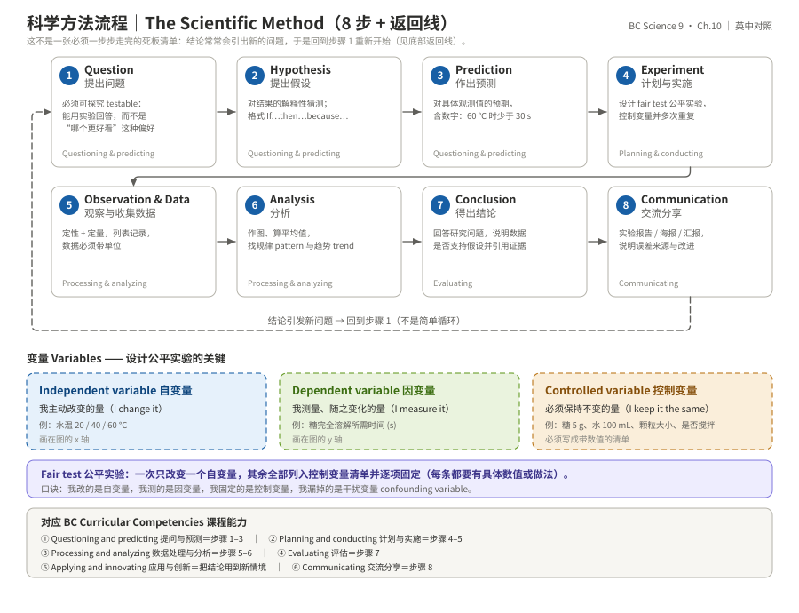
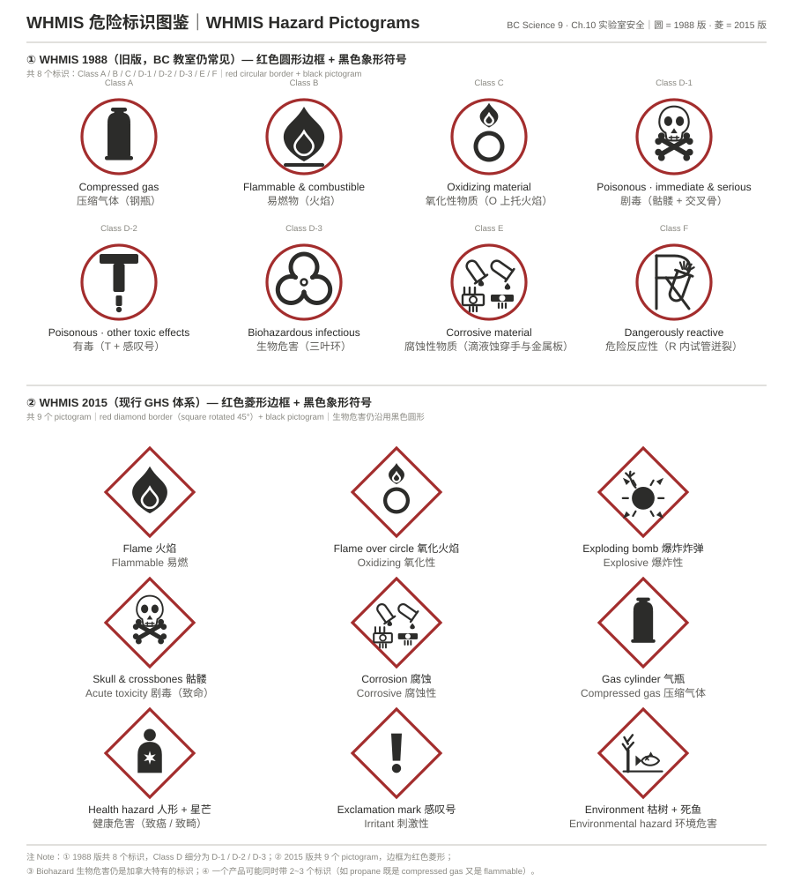

前 20 号元素中英双语周期表
Periodic Table, Elements 1–20

格内含原子序数、元素符号、中文名、英文名；四类元素配色分区。中间虚线框为过渡元素 3–12 族预留位置。
空白周期表（默测用）
Blank Periodic Table

只保留原子序数，其余留白。建议分三遍默：先符号、再中文名、最后英文名。
前 20 号元素玻尔模型图总表
Bohr Diagrams, Elements 1–20

每个原子标注质子数、中子数、电子层排布与价电子数。对应 Ch.5
玻尔图练习模板
Bohr Diagram Practice Template

含一个 Na 范例与 6 个空白练习框，配填写横线与「怎么填」提示卡。
主族元素路易斯点式总表
Lewis Dot Diagrams

按族排列的原子点式 + 常见离子点式。阳离子 0 个点，阴离子加方括号满 8 个点。对应 Ch.6
电子转移：Na + Cl → NaCl
Ion Formation

全册最关键的一张图：三步讲清电子如何转移、离子如何形成、英中命名顺序为何相反。
化合物命名决策树
Naming Decision Tree

先判断金属与否，再套离子或分子规则。含三条前缀硬性规则、俗名清单与英中顺序警示。对应 Ch.7–8
交叉法
Criss-cross Method

五步标准动作 + 三个例题 + 约简反例 + 多原子离子括号规则 + 检查清单。
希腊数字前缀表
Greek Prefixes 1–10

分子化合物命名用。含元音省略提醒（monoxide 不是 monooxide）与中文命名顺序对照。
全册主线流程图
From Electron Arrangement to Properties

八个环节串起整册，底部回扣 Big Idea。考前顺着走一遍，等于复习全册。
科学方法流程
Scientific Method & Variables

八步流程 + 变量三栏 + 与 BC Curricular Competencies 的对应关系。对应 Ch.10
WHMIS 安全标识
WHMIS Symbols

1988 版圆形标识 + 2015 版菱形 pictogram，中英双语。对应 Ch.10
导电性检测电路
Conductivity Test Circuit

四联对比：固体 / 水溶液 / 熔融态 / 分子化合物。离子化合物的判别实验。